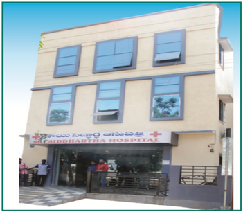

About SAI SIDDHARTHA HOSPITAL

Sai Siddhartha Hospital is 50 Bedded State Govt. Recognized Hospital with OT and ICU facility located in Shapur nagar, IDA Jedimetla, Hyderabad,Telangana State was found in 2016 offers specialities like Pulmonology, Diabetology, Internal
Medicine, general Surgery,ENT,Anaethesiology and Critical Care. It has Lung Surgery Unit, Video Bronchoscopy,Rigid Bronchoscopy, Thoracoscopy,Computerised Lung Function Testing,X-Ray and Lab facilities, Advanced Critical Care and Ventilatory
management. Complicated Diabetes Management, Allergy skin testing for food Allergy,skin Allergy & Allergic Rhinitis and Asthma.
Address:
# 4/32 – 130,Shapur Nagar, Behind MJS Gardens,
Indian Oil Petrol Bunk beside lane, Near Raitu Bazar,
Hyderabad, T.S – 500055.
Phone Number : +91 9550064751
Emergency Contact Number: 040 – 23090409
Email: info@saisiddharthahospital.co.in
Website: www.saisiddharthahospital.co.in
- Pulmonology
- Diabetology
- Internal Medicine
- ENT
- Anaesthesiology
- Critical Care
- Emergency
- Lab
- Pharmacy
- Digital X-Ray
- Biochemistry
- Clinical Pathology
- Microbiology
- Haemotology
- Digital X-Ray
- PFT (Pulmonary Function Test)
About Dr. Kiran Grandhi(Chairman)
 Dr.Kiran Grandhi owner of Sai Siddhartha Hoapital had completed MBBS in Guntur Medical College,MD Pulmonology in Osmania College, Hyderabad
and DIP (Diabetology).He is Member of European Respiratory Society and a Member of American Thoracic Society.He took advance training in Interventional Pulmonology from Marsielle – France.
Dr.Kiran Grandhi owner of Sai Siddhartha Hoapital had completed MBBS in Guntur Medical College,MD Pulmonology in Osmania College, Hyderabad
and DIP (Diabetology).He is Member of European Respiratory Society and a Member of American Thoracic Society.He took advance training in Interventional Pulmonology from Marsielle – France.
Pulmonology:He specialises in treatment in the treatment of Chronic cough, difficulty in breathing,,reccuring Pneumonia,Asthma, Cystic Fibrosis,Chronic Lung Disease, Noisy breathing,Weezing and Bronchitis.He does basic bronchoscopic and
Pleural procedures like Pleural Tapping, inter costal Drainage and Advanced diagnostic procedures like Medical Pleuroscopy for Inspection and Biopsy of Pleura, Thoracoscopy, Tracheoplasty and Air Stenting. (ADULT & PEDIATRIC)
Diabetology:He specializes in the treatment of infectious disease, Diabetic Footcare, Rhematoiud Arthritis, Migarine treatment, Diabetes Management, Hypo & Hyper Throoidism, Leg Swelling, Obesity Issues, Insulin Treatment,Type 1 Diabetes
treatment,Metabolic Disease, Osteoporosis, Hypertension, Thyroid Swelling, Gestational,Diabetic Management, Calcium Disorders,